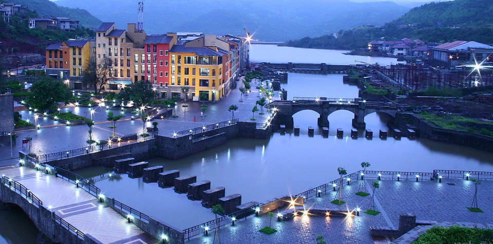
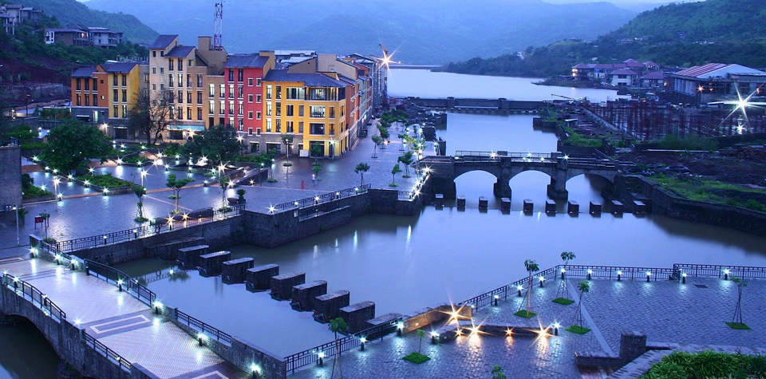

Nestled in the embrace of the Sahyadri mountains, Pune is a city where the past and present dance in harmony. Often hailed as the "Oxford of the East," Pune is a dynamic tapestry of rich history, vibrant culture, and modern innovation. Wander through its ancient forts that whisper tales of Maratha valor, or lose yourself in the bustling bazaars teeming with life and color. The city’s verdant gardens offer tranquil retreats amidst the urban hustle, while its thriving educational institutions pulse with youthful energy and intellectual vigor. Whether you're exploring its majestic palaces, savoring the local cuisine, or immersing yourself in the city's diverse festivals, Pune promises a journey that is as enriching as it is enchanting. Here, every corner has a story, every street a melody, making Pune a captivating symphony of tradition and progress.

Dagadusheth Halwai Ganapati Temple holds a special place in Pune's spiritual landscape, built by the renowned sweet seller Dagadusheth Gadve. Upon the tragic loss of his son to a deadly disease, his guru advised him to construct this temple dedicated to Lord Ganesha, a symbol of prosperity and remover of obstacles. The temple’s history is deeply intertwined with stories of faith and devotion, reflecting the enduring power of belief in overcoming personal tragedy. Over the years, it has transformed into a beacon of hope and spirituality for countless devotees, symbolizing the triumph of faith over adversity.
LOCATION OF DAGADUSHETH HALWAI GANAPATI TEMPLE:
Situated in the heart of Pune at Ganpati Bhavan, Budhvar Peth, the temple stands amidst the vibrant cultural and historical backdrop of the city. Its central location makes it easily accessible for devotees and tourists alike, offering a spiritual oasis in Pune's bustling environment.
HISTORY AND ORIGIN OF DAGADUSHETH:
The temple was founded by Shrimant Dagadusheth Halwai, a sweet maker (halwai) by profession, and his wife, Laxmibai. The couple was originally from Karnataka but settled in Pune, where they established their sweet shop. The temple's origin dates back to the late 19th century. After suffering the tragic loss of their son to a plague epidemic, Dagadusheth and his wife constructed the temple as a tribute and expression of their faith and devotion to Lord Ganesh. The construction was encouraged and supported by Lokmanya Tilak, a prominent freedom fighter and social reformer, who saw it as a means to unite people and foster a sense of community.
ARCHITECTURE AND DESIGN OF DAGADUSHETH HALWAI GANAPATI TEMPLE:
The temple is a splendid example of intricate Indian temple architecture. It features a large idol of Lord Ganesh, which is about 7.5 feet tall and 4 feet wide. The idol is adorned with gold and precious jewelry, donated by devotees over the years. The temple structure is simple yet elegant, designed to facilitate a smooth flow of devotees. The sanctum sanctorum where the idol resides is beautifully decorated, especially during festival times.
PILGRIMAGE AND FESTIVITIES AT DAGADUSHETH:
The Dagadusheth Halwai Ganapati Temple is a hub of activity, especially during the annual Ganeshotsav festival, which lasts for ten days. This festival, celebrated with great enthusiasm and devotion, attracts millions of pilgrims from all parts of India. During this period, the temple is elaborately decorated with lights and flowers, and numerous cultural programs and devotional music performances are held. The temple trust organizes various activities, including social and cultural events, free medical camps, and charity work.
DAGADUSHETH HALWAI GANAPATI:CELEBRITY DEVOTEES:
The temple is not only popular among the common people but also among celebrities and political figures. Over the years, many famous personalities, including Bollywood actors, sports stars, and politicians, have visited the temple to seek the blessings of Lord Ganesh. The chief ministers of Maharashtra often visit the temple during the Ganeshotsav festival, making it a high-profile event.
SPIRITUAL SIGNIFICANCE OF DAGADUSHETH HALWAI GANAPATI TEMPLE
Devotees believe that worshiping Lord Ganesha at Dagadusheth Halwai Ganapati Temple grants prosperity, success, and fulfillment of desires. The temple resonates with spiritual energy, inviting devotees to participate in daily rituals and special ceremonies throughout the year. Festivals such as Ganesh Chaturthi are celebrated with grandeur, featuring elaborate decorations, cultural performances, and the iconic immersion procession that draws thousands of devotees from far and wide.
DAGADUSHETH: SOCIAL CONTRIBUTIONS:
The Dagadusheth Halwai Ganapati Trust is actively involved in various social initiatives. They run old-age homes, schools, and hospitals, contributing significantly to the welfare of the community. The trust's involvement in social causes has earned it a reputation as a charitable organization dedicated to public service.
Nearest airport Pune

Description:
Embark on a journey through time and heritage as we delve into the rich history and architectural splendor of Shaniwar Wada, a magnificent palace nestled in the heart of Pune, Maharashtra, India. Built in the 18th century by the Peshwa rulers of the Maratha Empire, Shaniwar Wada stands as a testament to the grandeur and opulence of the era.
Intricately designed and fortified, Shaniwar Wada served as the seat of the Peshwa dynasty and witnessed the unfolding of significant historical events. Its sprawling complex, adorned with majestic gates, intricate carvings, and sprawling gardens, reflects the grandeur and architectural brilliance of the Maratha period.
SHANIWAR WADA LOCATION:
Shaniwar Wada is located in Shaniwar Peth, Pune, a central area that reflects Pune's historical and cultural heritage. The fort's strategic location and architectural grandeur continue to attract visitors from across the globe, offering a glimpse into Pune's illustrious past.
SHANIWAR WADA HISTORICAL SIGNIFICANCE:
Shaniwar Wada was a grand palace built by a powerful leader named Peshwa Baji Rao I in Pune, India, back in 1730. Initially, it was supposed to be a huge seven-story stone palace, but due to some rules, only the base floor could be built with stones. The rest was made of bricks. Over time, the Peshwas added more features like walls, gates, and fountains to the palace.
The palace was witness to many important events. In 1773, one of the Peshwas, Narayan Rao, was murdered here. It's also famous for the love story of Peshwa Bajirao and Mastani.
In 1818, the British took over the palace after winning a war. Later, in 1828, a big fire destroyed much of the palace, leaving only some parts standing. Today, what remains of the palace is a tourist attraction where people can see its history and grandeur.
SHANIWAR WADA ARCHITECTURE MARVEL:
Shaniwar Wada is a remarkable example of Maratha Imperial architecture. It was constructed using materials like teak, lime, and stone from various sources. The fortification wall of the palace had five entry points and nine bastion towers, making it well-defended.
Inside, the palace boasted intricately carved teak doorways, beautifully designed teak pillars, and marble floors. Its walls were adorned with scenes from the Ramayana and Mahabharata, while elegant glass chandeliers hung from the ceilings.
Within the palace complex, there was the Ganpati Rang Mahal, a special place for religious ceremonies, featuring a massive statue of Lord Ganesha.
A highlight of the palace was the Hazari Karanje, or the Fountain of a Thousand Jets, shaped like a lotus. It was known for its grandeur, with jets reaching up to 80 feet high, making it one of the most exquisite fountains of its time.
Other notable structures within the palace included the Thorlya Rayancha Diwankhana (the court reception hall of Baji Rao I), the Juna Arsa Mahal (Mirror Hall), and the Naachacha Diwankhana (Dance Hall), all showcasing the opulence and grandeur of the Maratha Empire.
SHANIWAR WADA PRESENT CHARMS:
Despite being a ruin, Shaniwar Wada remains a popular attraction in Pune, covering a vast area of 625 acres. Its historical significance draws visitors from all over.
Interestingly, Shaniwar Wada is also known as one of the most haunted places in Pune. Legend has it that the spirit of Peshwa Narayan Rao, who was murdered within its walls, still wanders the palace grounds at night. The evening light and sound show held here adds to the allure for tourists.
Shaniwar Wada's influence extends beyond its physical boundaries, shaping the layout of the old part of Pune. The surrounding area features some of the city's oldest markets, such as Tulshibaug, Laxmi Road, and Ravivar Peth, offering a glimpse into Pune's rich heritage and bustling culture.
SHANIWAR WADA LIGHT AND SOUND SHOW:
The light and sound show at the palace is one of its key attractions, offering visitors a captivating journey through the bygone era and the rule of the Peshwas. Here are the details:
Duration: The show lasts for 55 minutes
Ticket Booking Timings: Tickets can be booked between 6:30 pm and 8:30 pm.
Show Timings:
Marathi Show: 7:15 pm to 8:10 pm
English Show: 8:15 pm to 9:10 pm
Ticket Prices: The ticket price is ₹25 per person.
This immersive experience is offered in both Marathi and English, ensuring that visitors can enjoy and learn about the palace's history in their preferred language.
Nearest airport Pune

Historic fort set amidst rolling hills, known for panoramic views and local cuisine. Ideal for trekkers and history enthusiasts, with significant cultural landmarks and morning walk trails.Sinhagad, ealier known as ‘Kondhana’ is the most prominent and popular fort in Pune.It is located at village Donaje, taluka-Haveli. It is 25 km away from Pune on a hill 1290 m high. Tanaji Malusare-Chh. Shivaji’s trsusted and brave general,fought a battle here all alone with the Mughal army. on hearing news of his death, Chh.Shivaji said. “We won the fort but lost the lion” (“Gad Ala Pan Sinha Gela”), and so after his death Chh. Shivaji renamed this “Kondhana” fort as “Sinhagad”.
Sinhagad Fort, situated approximately 30 kilometers southwest of Pune city in Maharashtra, India, is a renowned hill fortress steeped in history and natural beauty. Originally known as Kondhana Fort, it has a rich heritage dating back to the 17th century. The fort was strategically positioned atop an isolated cliff of the Sahyadri mountain range, providing a commanding view of the surrounding landscape and serving as a formidable defense against invaders.
Throughout its storied past, Sinhagad Fort has witnessed numerous battles and sieges, including the famous Battle of Sinhagad in 1670, where it changed hands multiple times between the Marathas and the Mughals. Its strategic significance in regional politics and military history has made it a symbol of courage and resilience.
SINHAGAD FORT LOCATION:
Sinhagad Fort is situated on Sinhagad Ghat Road, approximately 30 km southwest of Pune, Maharashtra. The fort stands at an elevation of about 1,312 meters (4,304 feet) above sea level in the Sahyadri mountain range. Its strategic location atop a cliff offers commanding views of the surrounding region, including the Thoptewadi and Donje villages at its base.
SINHAGAD FORT TIMINGS AND ENTRY FEES:
Sinhagad Fort welcomes visitors throughout the week, but it's crucial to plan your visit within the designated timings to ensure a seamless exploration. The fort operates under the following schedule:
Opening Hours: 6:00 AM to 6:00 PM
Days:Open all days of the week
Entry Fees: Free
SINHAGAD FORT HISTORY:
Sinhagad Fort, also known as the Lion's Fort, holds a significant place in Indian history, particularly in the region of Maharashtra. Situated atop a hill in the Sahyadri mountain range, this formidable fortress has witnessed numerous battles and historical events over the centuries.
Ancient Origin:s
The origins of Sinhagad Fort date back to the 14th century when it was initially known as Kondhana Fort. It was built by the Yadava dynasty and later came under the control of the Bahmani Sultanate.
Shivaji Maharaj's Conquest:
One of the most notable chapters in the history of Sinhagad Fort is its association with the Maratha warrior king, Chhatrapati Shivaji Maharaj. In 1647, Shivaji captured the fort from the Adil Shahi Sultanate after a daring and strategic siege.
Strategic Importance:
Sinhagad Fort's strategic location made it a key stronghold for controlling the surrounding regions. It served as a bulwark against invading forces and provided a vantage point for monitoring enemy movements.
The Battle of Sinhagad:
In 1670, the Mughal army, led by Aurangzeb's son, attempted to recapture Sinhagad Fort. This led to the famous Battle of Sinhagad, where Tanaji Malusare, a trusted lieutenant of Shivaji Maharaj, displayed immense bravery and sacrifice in reclaiming the fort.
British Rule and Beyond:
During the British colonial period, Sinhagad Fort continued to play a strategic role. It witnessed several skirmishes and conflicts between the British East India Company and local Maratha forces.
Architectural Marvels:
The fort's architecture reflects a blend of Hindu and Islamic styles, showcasing the cultural influences of its various rulers. Its imposing walls, gateways, bastions, and reservoirs stand as a testament to the engineering prowess of its builders.
Tourist Attractions:
Today, Sinhagad Fort attracts thousands of tourists and history enthusiasts from around the world. Visitors can explore its ancient ruins, trek through scenic trails, and soak in breathtaking views of the surrounding landscape
Nearest airport Pune
DESCRIPTION:
The Raja Dinkar Kelkar Museum is a treasure trove of artifacts, reflecting the rich cultural heritage of India. Established by Raja Dinkar Kelkar, who had a passion for collecting unique items, the museum houses approximately 20,000 artifacts, including furniture, vessels, hookahs, and rare jewelry. Dedicated to his late son, the museum also features the exquisite Mastani Mahal and the Institute of Musicology and Fine Arts, making it a must-visit for anyone interested in Indian history and art.
RAJA DINKAR KELKAR MUSEUM LOCATION:
Located at Natu Baug, off Bajirao Road, Pune, the museum is easily accessible for both locals and tourists. Nestled in a vibrant area of the city, it’s surrounded by other cultural landmarks and eateries, making it a convenient stop on any exploration of Pune's rich heritage. The museum's location is strategic, being close to public transport options, ensuring that visitors can reach it without hassle.
RAJA DINKAR KELKAR MUSEUM TIMINGS AND ENTRY FEE:
Everyday: 10:00 am to 05:30 pm
Entry Fees: Adults: ₹20, Foreigners: ₹200
Arriving early is advisable to fully enjoy the exhibits without the last-minute rush. The museum is also a fantastic option for families and students looking for an educational outing during weekends.
RAJA DINKAR KELKAR MUSEUM COLLECTION AND EXHIBITS:
Raja Dinkar Kelkar Museum showcases a vast array of artifacts, including intricate utensils from the 18th and 19th centuries, crafted from copper, brass, and terracotta. The collection includes unique items sourced from various parts of India, such as Kerala and Gujarat, as well as war armors made from crocodile skin and fish scales, offering a fascinating glimpse into India's historical craftsmanship. Each exhibit is carefully curated, providing insights into the artistry and cultural significance of the items on display.
RAJA DINKAR KELKAR MUSEUM HIGHLIGHTS:
Mastani Mahal: A stunning reconstruction of the palace of Mastani, showcasing royal heritage and architectural brilliance.
Institute of Musicology and Fine Arts: Promoting the study of music and fine arts, this institute within the museum nurtures local talent and offers workshops.
Diverse Artifacts: Over 20,000 items that encapsulate India's rich cultural tapestry, making it one of the largest collections of its kind in the country.
Nearest airport Pune
Rajiv Gandhi Zoological Park, formerly known as Katraj Snake Park, is a modern zoo in Pune established in 1986. Renamed in 1999, it adheres to Central Zoo Authority guidelines and features diverse wildlife including a white tiger named Tanaji and a male Bengal tiger. Highlights include sloth bears, Indian Rock Pythons, and educational programs during Nagpanchami about snake handling and conservation.
RAJIV GANDHI ZOOLOGICAL PARK LOCATION:
Rajiv Gandhi Zoological Park is situated in Katraj, Pune, offering easy access from the city center and surrounding areas. It spans across acres of lush greenery, providing a serene escape amidst urban life.
RAJIV GANDHI ZOOLOGICAL PARK: TIMINGS AND ENTRY FEES:
Timings:
Rajiv Gandhi Zoological Park is open from 9:30 AM to 5:00 PM, offering ample time to explore its wildlife exhibits and enjoy a day out with family.
Entry Fees:
The entry fee is ₹40 for adults and ₹25 for children, making it an affordable destination for wildlife enthusiasts and families alike.
RAJIV GANDHI ZOOLOGICAL PARK HISTORY AND EVOLUTION:
The park was created in the year 1986 as Katraj Snake Park and it was only later in 1999 that it was rechristened as Rajiv Gandhi Zoological Park. In its new avatar, the park now sports a modern look which is in accordance with the Central Zoo Authority of India guidelines. Today, it stands as a comprehensive zoological park, showcasing diverse wildlife in a spacious and natural environment.
Nearest airport Pune